OWP：在融合表示中重平衡证据与先验
南京大学等提出免训练框架 OWP，用四视图诊断跨模态冲突，在融合表示中抑制竞争先验、恢复被压制的证据，再解码。
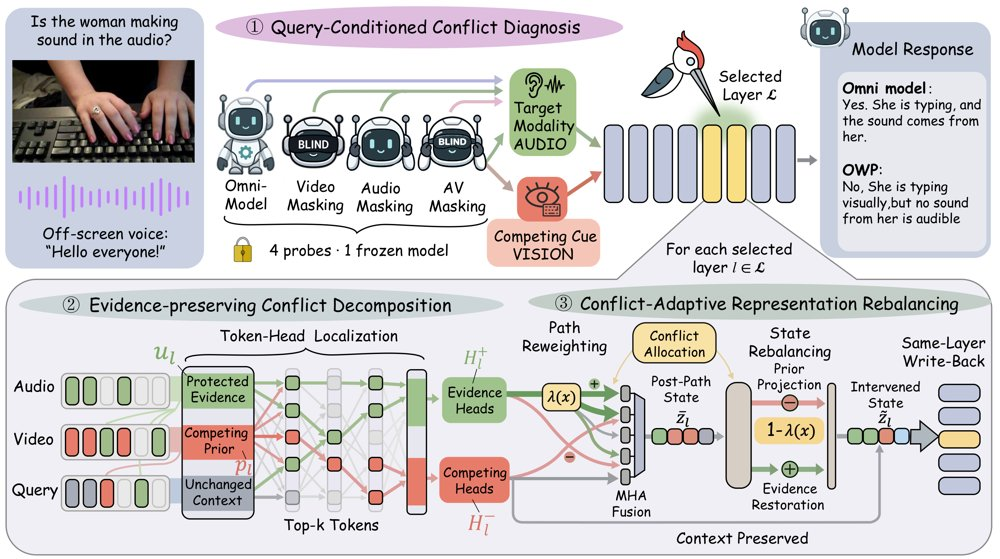
OWP 概览：给定查询和音视频输入，它用冻结模型的四个视图定位目标模态与竞争线索，将 token–head 响应分为受保护证据、竞争先验与不变上下文，再把同一校正预算分配给路径重加权和残差状态恢复，并将编辑写回同一层。
解决了什么问题。全模态大模型在音视频联合推理中常出现跨模态幻觉；已有方法多在输出端校正解码分布或偏好。但早融合模型中，真实证据与学习先验在解码前已深度纠缠，输出层操作难以修复受损的隐状态。
方法。OWP 是免训练框架：先用完整、音频、视频、纯文本四个视图诊断查询所需的目标模态与竞争来源；再用正交分解把隐藏状态拆成证据方向、正交冲突方向和证据亏空。最后按冲突强度把同一校正预算分配给注意力路径与残差状态，在解码前抑制误导先验并恢复被忽略证据，不改模型参数。
关键结果。在 Qwen2.5-Omni-7B 上，OWP 将 CMM 准确率提升 12.9 个百分点、AVHBench 提升 8.6 个百分点，并比最强基线 MAD 分别高 4.9 和 7.7 个百分点。CMM 幻觉抵抗率从 57.0% 升至 85.5%，感知准确率为 86.7%；在 VideoLLaMA2-AV 上两项基准分别提升 4.6 和 3.9 个百分点。四个通用全模态推理基准也提升 0.67–2.25 个百分点，推理延迟为骨干的 1.71–1.77 倍。
为什么值得看。它把幻觉缓解从输出端拉回融合表示，说明不重训练、不改语言头也能通过推理时表示编辑提升可靠性。对开源权重全模态模型，这是一条低训练成本的部署路径。
局限 / 存疑。方法只针对跨模态幻觉，且只能恢复骨干模型已编码但未使用的证据；若目标模态本身被误感知，就没有可靠证据可恢复。它需要访问模型内部，不能用于仅提供 API 的模型，并带来 1.71–1.77 倍骨干延迟。
基础大模型 & 基础模型底层研究
模型可解释性、模型内部机制
alphaXiv · arXiv
UserArena：长程购物智能体的用户模拟基准
团队发布真实电商交互基准 UserArena，含 64,729 条会话轨迹，并提出 OPTD 训练方法。
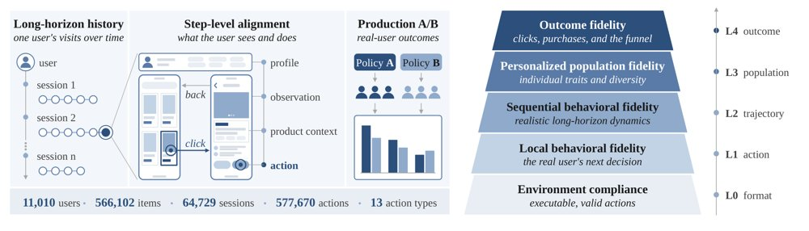
UserArena 概览：左侧为跨会话历史、逐步对齐的交互记录、生产 A/B 验证与数据规模，右侧为从环境合规（L0）到结果保真（L4）的五级评测协议。
解决了什么问题。智能体推荐需要模型在很长的交互过程中连续做出依赖上下文的决策，因此开发和评测这类策略都需要一个能忠实模拟购物环境与用户响应的推荐世界模型。现有资源很少提供长程、细粒度的真实用户轨迹，也缺乏轨迹级评测，以及能和生产 A/B 结果对齐的离线验证。
方法。UserArena 在真实电商环境中重建推荐信息流与商品详情页，覆盖 13 类动作，并把同一用户跨多次会话的记录按时间串成长程轨迹。配套的五级评测协议从输出可执行性（L0）逐级推进到局部决策、顺序行为、个性化群体与最终结果保真（L4）。作者进一步提出 On-Policy Trajectory Distillation（OPTD）：把轨迹级意图作为特权上下文交给冻结教师模型，在学生自行采样得到的 rollout 的每个 token 上提供稠密监督，再用逐 token 信任域限制意图带来的分布偏移。
关键结果。UserArena 包含 11,010 名用户、64,729 条会话、577,670 次动作和 566,102 个商品；跨会话子集为 5,768 名用户的 59,378 条会话，人均 10.29 次会话、86.36 个动作。在单会话设定下，OPTD 在全部 8 项 L1–L4 指标上排名第一，F1 为 0.4178、准确率 0.3204、决策分布 JSD 为 0.0156；在跨会话设定下，它在 8 项指标中有 5 项第一，包括决策分布 JSD 0.0284、轨迹长度误差 0.72 和群体保真 PF 0.8929。在生产 A/B 对照中，OPTD 的模拟策略效应比为 0.713×、效应误差 0.287，比次优模拟器低 50.2%。
为什么值得看。它把用户模拟器的评测从单步 next-action 一致性推进到长程行为，并与线上 A/B 结论直接对照；这为智能体推荐的离线策略评估提供了一个更接近生产的验收标准。
局限 / 存疑。跨会话设定下 OPTD 并非全面领先，其 F1 为 0.3456，低于 Shop-R1 的 0.3533 和 STA 的 0.3556，STA 在宏 F1 与 CTR 误差上更优。数据来自单一电商平台且品类失衡，服装占点击的 54.90%；生产 A/B 验证仅覆盖一对排序策略，即便是最佳的 OPTD 仍低估线上效应 28.7%。
AI 智能体 Agent / 自主智能
alphaXiv · arXiv
分层VLA智能体兼顾Minecraft长程任务
HiSTEVE用VLM规划器加单个VLA，在Minecraft中仅靠视觉和键鼠完成原子与长程任务。
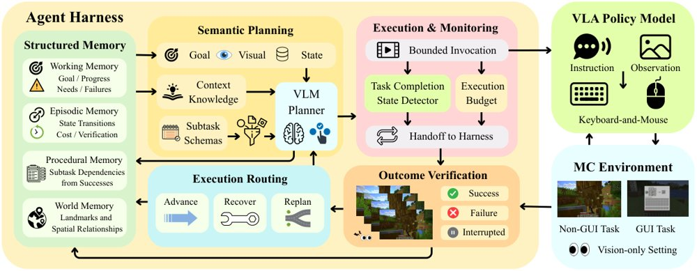
HiSTEVE系统总览，展示agent harness协调VLM规划器与VLA执行的机制。
解决了什么问题。现有Minecraft智能体往往只强在一边：VLA能直接用视觉到键鼠控制，但缺少持久任务状态和长程推理；LLM/VLM智能体擅长分解规划，却常依赖环境API或预定义技能。长程执行还要求判断子任务何时结束，过早或过晚交接都会损害进度。GUI与非GUI交互的视觉分布和鼠标语义不同，简单联合训练容易负迁移。
方法。HiSTEVE把慢速VLM规划器与单个VLA组成分层系统：harness用结构化记忆跟踪进度，并只在VLA能力范围内选择原子子任务；策略耦合的完成检测器给出候选完成信号，再由harness用视觉证据核验并决定推进、恢复或重规划。底层VLA以Qwen2.5-VL-7B为初始化，仅用第一人称视觉和原生键鼠动作执行，20 Hz运行。为缓解GUI与非GUI干扰，作者引入按交互类型分支的RMSNorm和分离的鼠标位移token，并按世界知识注入、模仿学习、环境反馈强化学习三阶段训练。
关键结果。在MineStudio Bench上，HiSTEVE的平均严格pass@1为85.0%（Mine 93.3%、Kill 86.7%、Craft 66.7%、Smelt 93.3%）；OpenHA平均37.4%，较Text/CoA的36.8%仅高0.6个百分点，Embodied为46.0%（基线37.0%），但GUI 27.2%和Combat 39.0%分别低于基线的33.3%和40.0%。LongBench上四个任务族最终目标成功率为42.9%、28.6%、14.3%、14.3%，宏平均25.0%；在固定VLA的对照中，完整harness把Goal SR从10.7%提高到25.0%，诊断进度从17.9%提高到28.6%，而MineStudio All仅从81.2%到85.0%、OpenHA Avg从37.8%到37.4%。完成检测器在4,674个平衡验证样本上准确率和F1均为0.863，高于GPT-4o的0.690和GPT-5.5的0.776。
为什么值得看。这说明长程自主性不只取决于底层控制器强弱，更取决于如何保存任务状态、约束规划并组织反复调用；对开放世界游戏和更一般的具身智能体都有方法学意义。
局限 / 存疑。原子子任务接口由人工定义，新增能力需额外数据和策略更新，系统也不做参数化持续学习，高层规划还依赖现成VLM。OpenHA的GUI/Combat仍低于基线，LongBench的Recovery和Open-ended仅14.3%，多步GUI、恢复效率和弱结构化目标仍是明显瓶颈。
AI 智能体 Agent / 自主智能
计算机视觉 CV
机器人 & 具身智能
alphaXiv · arXiv
RSIHub：把agent进化方法拆成可复用配方
开源框架RSIHub将agent进化方法的策略与执行、评估基础设施分离，四个方法无需改核心即可复现和对比。
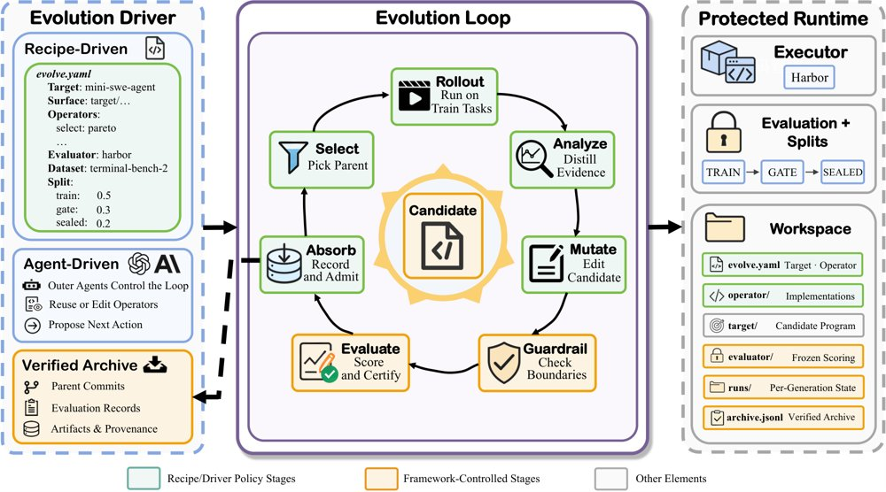
RSIHub将方法策略与框架管理的执行分离：recipe驱动运行中配方固定，agent驱动运行中外层agent可依据每轮反馈修改配方，但目标、评估器、运行时、数据划分和可变面保持固定，评估与存档由框架控制。
解决了什么问题。Agent进化方法利用执行反馈持续修改提示、技能、工具和编排，但每个实现往往重建同一套候选工作区、执行、评估、恢复与谱系设施。方法策略与基础设施捆绑后，复现一个方法要另建端到端系统，比较方法还要对齐runner、配置与评估器接口。
方法。RSIHub把方法策略写成recipe，绑定可复用operator并声明可变资源；框架提供执行、评估、恢复和谱系，评估与存档位于可变面之外。生命周期分为Select、Rollout、Analyze、Mutate、Guardrail、Evaluate、Absorb七个阶段，固定recipe与agent驱动模式共用同一受保护流程。AHE、Hyperagents、A-Evolve、GEPA作为recipe实现，无需修改框架核心。
关键结果。在固定模型和评估器下，最大总体pass@1提升为13.5个百分点（MiniSWE在Terminal Bench 2上从56.2到69.7）；但方法排名随agent、基准和数据划分变化。四个适配各用47–61行recipe、复用2个operator绑定、框架源文件改动为0，方法特定operator代码为216–1,087行；420次故障注入与边界试验全部达到要求，且未接纳损坏状态。
为什么值得看。共享协议和可检查的候选历史降低了方法间比较成本，并把结果与评估条件绑定，帮助研究者区分策略变化与测量条件变化。
局限 / 存疑。证据保证依赖可信框架服务、主机与文件系统保护、Git和摘要操作、外部服务及有效评估器；结果仅覆盖所测工作负载与生命周期边界，能力保持测的是任务级一致性而非完整行为等价。实验评价的是固定recipe驱动运行，而非外层agent自适应修订；单次运行点估计也不能确定接近差异的稳定性。
AI 智能体 Agent / 自主智能
AI 工程、推理部署、系统方向
alphaXiv · arXiv
Dual Exam：分开评测智能体与世界模型
论文提出 Dual Exam 框架，在固定环境响应与固定动作干预下分别评测多模态智能体与世界模型，而不只看端到端耦合结果
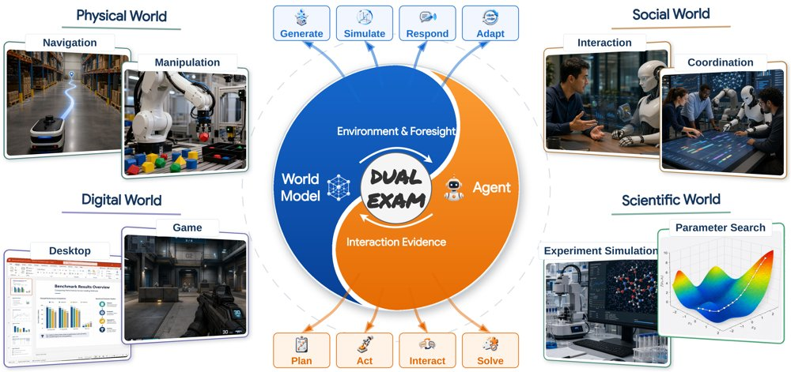
图示智能体与世界模型的互补关系及 Dual Exam 的评测范围：框架在受控条件下分别评测两个组件，箭头表示交互的潜在用途而非联合训练已证实的收益。
解决了什么问题。世界模型可为多模态智能体提供模拟经验与动作条件预测，智能体的交互轨迹也可反过来用于改进世界模型，但两者耦合后的端到端失败无法说明问题出在智能体决策、世界模型响应还是二者交互。作者在一项预实验中用一个智能体–世界模型组合在十个场景的150个案例上测试，按所设协议任务成功率为0%，轨迹显示出状态偏差与响应能力不足，却无法定位失败来源。
方法。Dual Exam 把两部分拆开评测：智能体侧在固定的环境响应机制下比较10个配置，覆盖物理、数字、社交与科学四个域、15个报告类别、共1,088个评测项；世界模型侧在固定动作干预下评测400个案例、八个场景，每个场景50例，16个配置中有15个覆盖全部八个场景，1个只覆盖六个。两条评测线使用不同任务、指标与聚合规则，因此各自的汇总分数不可直接比较。
关键结果。在按案例数加权的 Agent Index 上，GPT 6 Astra 以31.3居首，GPT 5.6 Sol 为20.7、Gemini 3.6 Flash 为20.1、Qwen 3.8 Max 为20.0、Kimi K3 为19.8；没有任何配置在所有类别领先，Astra 领先九个类别、DeepSeek V4.1 Flash 三个、Sol 两个、Seed 2.1 Pro 一个。科学域109个评测项中 Astra 取得最高的域内得分50.6，其次是 DeepSeek V4.1 Flash 的44.0和 Sol 的42.2，但分项领先者不同（Astra 在数学与计算60.8、物理科学52.2，Sol 在健康与医学45.4，DeepSeek 在生命科学53.7）。世界模型侧，GPT-Image-2 在覆盖全部八个场景的配置中以21.7的 WM Overall 领先。Index 中物理任务占48.16%、科学任务占10.02%；若改为等域加权，DeepSeek 从第六升至第二、Kimi 从第五升至第四，Astra 仍居第一。
为什么值得看。把智能体执行能力与世界模型状态转移能力分开测量，为研究二者交互提供了可复现的组件级基线，也说明单一端到端分数不足以诊断耦合系统的瓶颈。
局限 / 存疑。智能体与世界模型两条评测线的任务、指标和聚合方式不同，作者明确表示其汇总分数不可直接比较；排名依赖案例数与域混合的加权选择，等域加权即改变多个位次，且由取整后的均值造成的小差距不足以证明统计显著优势。这些测量能否预测耦合表现、以及联合训练是否带来持续互惠提升，论文并未验证。
AI 智能体 Agent / 自主智能
alphaXiv · arXiv
达摩院推出16B统一具身模型
阿里达摩院RynnUnify把具身理解、长程视频规划与机器人动作整合进一个16B模型，并给出仿真与真机评测。
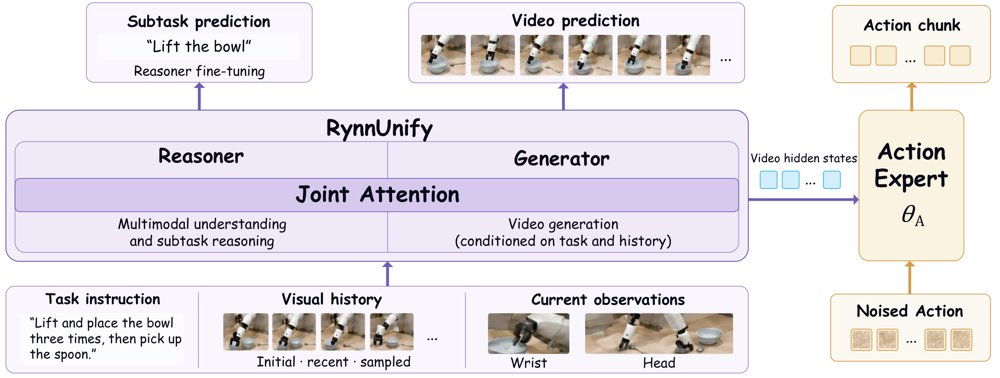
RynnUnify-VLA总览：模型处理任务指令、视觉历史与当前观测，进行子任务推理和视频预测，动作专家利用生成器的视频隐状态预测动作块；联合视频-动作训练时生成器与动作专家被优化，推理器保持冻结。
解决了什么问题。现有统一多模态模型虽能同时做理解与生成，但在长程任务中场景变化与预测误差会逐步累积，静态视觉预测也容易忽略中间动态。机器人需要在一个模型里连贯地识别子目标、预测场景演化并把任务意图转成动作。论文认为，这要求把具身理解与时间上连贯的视频预测通过交替式推理连接起来。
方法。RynnUnify沿用Cosmos3的Mixture-of-Transformers架构，由8B自回归推理器和8B扩散生成器组成，二者通过联合注意力交互；生成器引入跨视频片段场景记忆、首尾帧条件与视频续写。作者还用强化学习从推理器后训练出8B智能体，让它自行选择直接回答或调用冻结的RynnUnify生成视频再解读；并把完整模型扩展为世界-动作模型，通过潜在规划与视频-动作联合训练输出动作块。
关键结果。论文称，RynnUnify在所受评测的统一多模态模型中取得最高的平均具身理解分数；在自建Rynn-VP上总体分数比Cosmos 3 Nano高9.75分。智能体扩展使Rynn-GEU平均分比直接推理高6.0分；世界-动作扩展在20个选定的复合RoboCasa365任务上成功率为51.5%，在三个真机任务上平均成功率为46.7%。
为什么值得看。它尝试用同一个基座覆盖具身理解、长程视觉规划与机器人控制，并通过视频预测辅助推理未观测状态，为“统一具身大脑”提供了一条可评测的工程路径。
局限 / 存疑。论文正文未给出专门的局限性讨论；评测集中在所选20个RoboCasa365复合任务和三个真机任务，Rynn-VP与Rynn-GEU又是作者新提出的基准，缺乏第三方复现。长程 rollout 中的误差累积、场景记忆失效条件以及跨机器人平台泛化仍待验证。
基础大模型 & 基础模型底层研究
计算机视觉 CV
机器人 & 具身智能
alphaXiv · arXiv
让VLA自己判断该停还是该救
Echo把停止与失败信号拼进动作块一起去噪，令信号先于动作收敛，在五个真实操作任务上提升完成度。
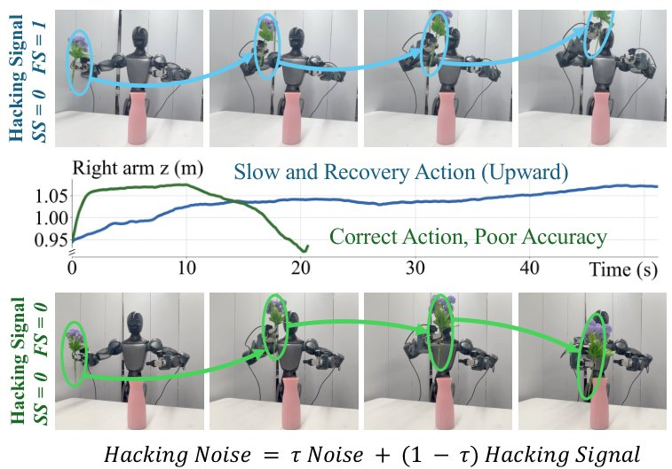
在Insert Flower上干预信号：固定SS=0时，强行令FS=1会诱发机械臂上抬的恢复动作（蓝），令FS=0则产生朝任务目标的动作（绿），曲线为右臂高度随时间的变化。
解决了什么问题。VLA策略在真实机器人上执行时，需要判断任务是在进行中、已成功还是已失败，才能决定继续、停止或介入恢复。现有做法要么依赖帧级进度标注、外部监控模型或复杂架构，要么只把预测出的状态信号用于监控，很少用它直接改进动作生成。
方法。Echo用停止信号（SS）和失败信号（FS）表示任务状态，把两者作为动作块的两个附加维度，与机器人动作一起做流匹配去噪。监督来自成功演示、失败轨迹、人工介入前的失败片段和恢复演示四类数据，仅靠子任务级提示加成功或失败标签构造目标，不需要帧级进度标注。推理时屏蔽SS与FS之间的直接注意力以保持语义区分，并让信号比动作更早收敛（τ_clean=0.5），使后续动作去噪步条件于更干净的状态估计。
关键结果。在五个真实操作任务上各做30次试验，Echo的完成分均高于只用动作的π0.5基线：Insert Flower从5.67±0.92升至8.33±0.69，Capsule Toy从8.40升至8.57，Insert Pen从6.87升至8.60，Make Tanghulu从4.33升至5.33，Open Drawer从5.40升至7.90；对应帧级Macro-F1为88.01%–92.18%，轨迹级F1为90.00%–100.00%。分布外条件下增益更大：Insert Flower从2.00±1.07升至8.00±1.07，Open Drawer从2.40±1.06升至6.87±0.29（各15次试验）。在Insert Flower上与CycleVLA（3.00）、VLA-Corrector（5.67）比较均占优。LIBERO-Recovery仿真4,500次试验成功率34.76%对32.67%，帧级状态准确率89.97%；推理延迟在RTX 4090上从115 ms增至120 ms。
为什么值得看。它把“该停还是该救”的判断做进策略内部，无需外部监控模型或推理期梯度计算，为VLA的低成本失败恢复提供了一条可复用路径。信号干预实验显示，强行把FS置1会诱发机械臂上抬的恢复动作，说明状态信号确实在引导动作生成，而不只是在旁观测。
局限 / 存疑。与现有方法的对比、全部消融和信号干预只在Insert Flower一个任务上完成；分布内增益有限，Insert Flower的分布内完成分反而从9.33降到8.67。状态判定对SS阈值较敏感，单一0.5阈值并非每个任务最优，轨迹级F1也随评估窗口长度大幅波动（如Capsule Toy在5帧窗口下仅26.7）。仿真提升只有2.09个百分点，且三个评估种子共用同一checkpoint，不构成独立训练重复。
机器人 & 具身智能
alphaXiv · arXiv
单模型同时导播与解说电竞赛事直播
DirCast 用单个流式视频语言模型，从十路英雄画面每秒选镜并解说，27 场职业 Dota 2 比赛上胜过 GPT-5
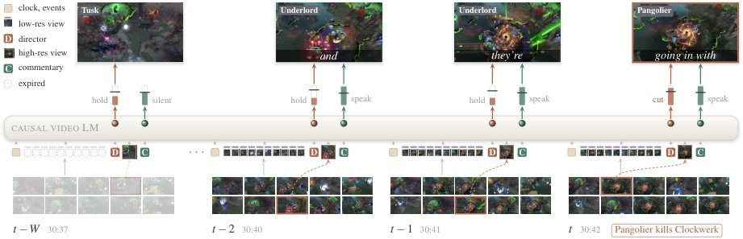
框架：每秒由低分辨率 ViT 编码十路画面及其英雄状态，导演头决定保持或切换，选中画面以高分辨率读入，解说随后生成，低分辨率视图过期而播出的节目留存。
解决了什么问题。现有的流式解说模型（LiveCC、StreamingVLM、Proact-VL 等）都假定输入是已经剪好的成品广播，选镜这一最难的环节仍由人类导演完成，模型免费继承了导演的判断。若只给十路原始英雄画面，这类模型无法使用。论文把「导播」与「解说」合并成一个任务：模型每秒决定哪路画面播出，并在自己选出的画面上即时解说，且只能使用过去的信息。
方法。DirCast 微调 Qwen3-VL-8B，把比赛组织成每秒增长一个 chunk 的单一 token 流：chunk 先放入事件与十路低分辨率画面（各带一个编码英雄血量、近期伤害、周围敌人的状态 token），随后由「保持或切换」导演头给出切门概率与指向十路画面的指针，选中的画面再以高分辨率追加，解说在其后生成。低分辨率视图 8 秒后移出上下文，高分辨率播出画面与已说出的文字保留，即「节目就是记忆」，使任意长度流的每秒成本有界。训练时加入扰动节目 rollout（让播出画面短暂偏离人类选择而目标仍是人类）与事件锚定目标（击杀附近也接受凶手/受害者镜头），推理时切与说的阈值跟随模型自身近期决策率向人类节奏回归。
关键结果。导播方面，DirCast 与人类导演的 Top-1 一致率为 26.95、Any-visible 为 41.81，高于最强规则基线 action rule 的 25.43 与 36.11，覆盖 89.1% 的击杀（人类导演为 50.3%），每分钟切 6.7 次（人类 7.9 次）；零样本 VLM 中 GPT-5 的 Top-1 仅 13.53，且多数每分钟切 20 至 56 次。解说方面，在 Proact-VL 协议下对 GPT-4o 的胜率为 29.21%，高于最强流式解说基线 LiveCC-7B-Base 的 19.38%（p<0.001），开口时间比人类解说平均晚 0.30 秒。联合模型优于分开训练：Top-1 27.00 对 25.17，胜率 29.21% 对 24.36%，显存从 37.8 GB 降到 18.9 GB；长流测试中每秒计算 0.29 秒、缓存 6.9k token，可在单 GPU 实时运行。
为什么值得看。它把通常分开研究的「选什么给观众看」和「怎么讲」耦合进一个因果模型，直接从原始多路画面产出完整直播，让区域联赛、业余比赛这类请不起导播团队的长尾赛事有可能自动化制播。
局限 / 存疑。数据仅来自 27 场 Dota 2 职业比赛（训练 2,096 个片段），单一游戏、单一赛事生态，能否迁移到其他项目未知；解说评判因官方 GPT-5.1 不可得而改用 GPT-5，绝对胜率 29.21% 仍不高，F1（78.22）还低于说话率 99.9% 的 Proact-VL（83.21），战斗覆盖率 41.1 也明显低于 action rule 的 62.4，且各基线看的是人类成品广播、DirCast 看自己的节目，比较并非完全同条件。
计算机视觉 CV
alphaXiv · arXiv
积木装配工具包让 LLM 智能体告别悬空与穿模
CMU 等提出 BrickWright：给 LLM 智能体一套积木装配工具包，512 条提示上物理可行率达 100%。
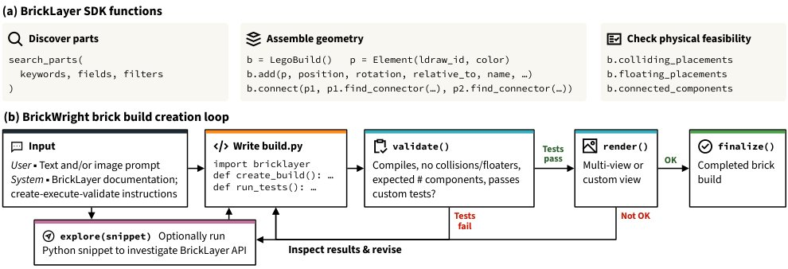
方法总览：(a) BrickLayer 提供零件检索、带类型连接器的组合式搭建与物理验证；(b) BrickWright 让预训练 LLM 智能体编写并修改含搭建代码与自写测试的 build.py，validate 执行固定的碰撞与悬空检查以及智能体自写测试，render 提供多视角渲染供目视检查，全部通过后调用 finalize。
解决了什么问题。前沿编程智能体已能写出像样的 LEGO 模型代码，但生成的装配体经常出现零件穿模、悬空或互不相连，无法在真实世界拼装。作者认为这一瓶颈的根本原因是缺少装配用的工具，而不是模型能力不够。
方法。作者先构建 BrickLayer：一个 Python 积木工具包，包含可按连接器对接的装配 API（支持卡扣、铰链、球关节等）、零件检索和物理验证器，可检查碰撞、悬空与连通性；该 API 相比直接写 LDraw 可将推理成本减半。其上搭建 BrickWright 框架，让预训练 LLM 智能体在“规划—执行—验证”循环中反复编写与修改 build.py，调用 validate 和 render，直到通过固定检查与自写测试。
关键结果。在 BrickNet-512 的 512 条文本提示上，未加工具的智能体物理可行率从 9%（GPT-6 Luna）到 69%（GPT-6 Astra）不等，配备 BrickWright 后所有智能体（含 Haiku 5.5、Luna）均达到 100%，且强模型的提示一致性（VQAScore、PE、SigLIP 2）基本持平；轻量模型 Luna 的成功率从 9% 提升到 100%，成本约为前沿模型的 2%。消融显示：不用装配 API 时 token 花费约 2 倍、validate 调用约 3 倍，Luna 的平均零件数从 27.4 掉到 7.2；仅用 API 而无验证器，可行率最多提升 44 个百分点，但所有智能体都低于 79%。GPT-6.1 Sol 完整版有 81% 的构建在两次 validate 内通过，不用 API 时为 37%。成本上 Astra 完整版为每样本 $1.28（Codex 基线 $1.21），Articraft 为 $3.00。框架还支持图像条件、关节可动结构，以及超过 29,000 个零件的大规模场景。
为什么值得看。这一结果表明，在需要满足物理约束的生成任务中，精心设计的构造 API 与可执行验证器，比单纯换用更强的模型更能带来性能提升；轻量模型也能借此以低得多的成本产出可用结果。这套“工具包加验证反馈”的模式可以迁移到其他多零件装配与 CAD 生成任务。
局限 / 存疑。论文对“物理可行”的定义只覆盖是否使用真实零件、有无碰撞与悬空、是否连通，不包含稳定性和可执行装配顺序，作者将这些检查留作后续工作。评测中的可行率由 BrickLayer 自身的验证器判定，作者虽对疑似误报做了人工复核，但仍属自评；且智能体方法比专用模型慢且贵（BrickNet 约 5 秒对完整版 143–267 秒）。
alphaXiv · arXiv
Transformer 能量模型实现高分辨率图像生
MIT 等机构提出 TEM，在潜空间用 Transformer 参数化能量，ImageNet 256 无引导 FID 3
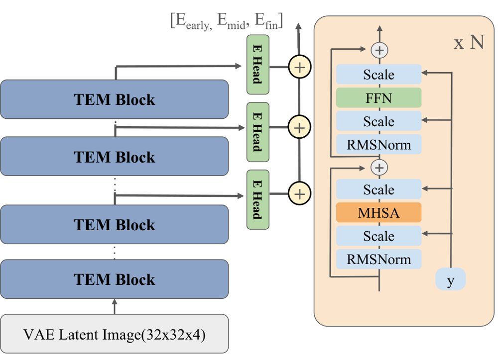
TEM 架构与训练策略：左侧 Transformer 能量模型处理 VAE 编码的潜变量 token，多层能量头输出标量能量并求和；右侧对比训练压低数据样本 x⁺ 的能量、抬高 MCMC 负样本 x⁻ 的能量，同时用 PRA 把内部特征对齐到冻结的视觉基础模型。
解决了什么问题。能量模型把概率建模与生成过程解耦，理论上支持组合生成，也支持靠增加采样步数在推理时扩展计算。但高维 MCMC 混合差和深层网络训练不稳定，长期把对比式能量模型限制在 CIFAR 级别的小规模、低分辨率场景。
方法。TEM 用 ViT 作为能量函数，但完全工作在 Stable Diffusion VAE 的冻结潜空间中，并采用旋转位置编码、query-key 归一化与 AdaLN 条件注入。模型在多个中间层接出能量头并把各自的标量能量相加，使早期层管局部纹理、深层管全局语义。训练使用对比能量目标加采样匹配损失，并提出 Positive Representation Alignment，只用数据正样本把内部特征对齐到冻结的 DINOv2-large，MCMC 负样本不参与对齐。
关键结果。TEM-XL（609M）在 ImageNet 256×256 上不用 classifier-free guidance，60 步采样取得 FID-50K 3.82，TEM-L 为 4.74；512×512 上 FID-50K 为 8.24。TEM-B 的消融显示，PRA 把 50K 步的 FID 从无对齐的 42.8 降到 19.9，而同时对齐正负样本只到 36.6；三个能量头为 19.86，优于单头 20.95 与双头 20.50。四个 OOD 基准平均 AUROC 为 0.717（DiT 0.598、SiT 0.573、SiT+REPA 0.549）；CLEVR 256×256 组合生成中 1/2/3 物体检测成功率为 0.956/0.766/0.274，Composable Diffusion 为 0.863/0.598/0.262。
为什么值得看。这表明只靠自身 MCMC 负样本、不依赖扩散轨迹或辅助图像初始化的纯对比式能量模型，也能扩展到 ImageNet 256×256 和 512×512 的高保真生成；同时，组合生成、零样本 inpainting、OOD 检测这些能量模型原生能力在该分辨率下依然可用。
局限 / 存疑。训练和推理都需要迭代采样，计算成本是主要瓶颈：论文报告训练 TEM-XL 50K 步约需 4 张 H200 跑 6 天，512×512 的训练与推理耗时再增 3–4 倍。推理时延长采样还有保真度—多样性权衡：步数从 40 增到 80，FID 先从 7.63 降到 60 步的 3.82 再回升到 4.72，IS 从 106.0 升到 221.1，而 recall 从 0.65 降到 0.51。
alphaXiv · arXiv
CycleGRPO统一图像视频区域理解与定位
新框架把图像掩码、视频区间和时空证据统一到区域-文本-区域循环，用重建重叠作可验证奖励，无需参考描述或外部评审。
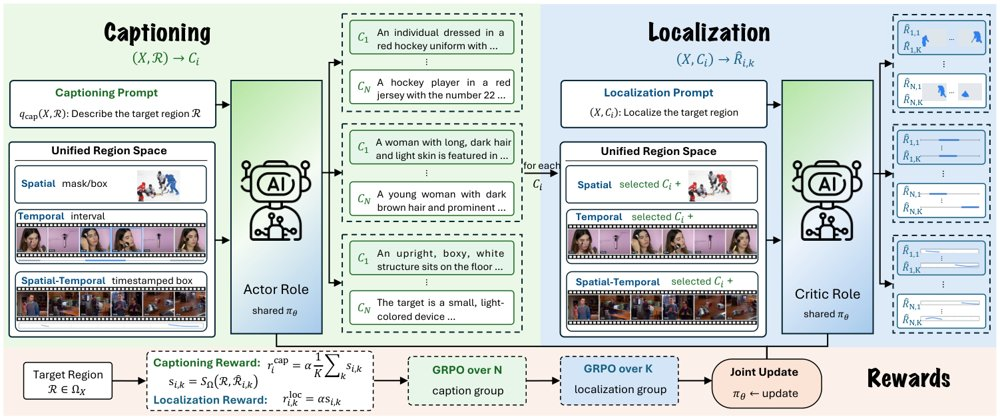
Generalized CycleGRPO概览：给定视觉输入与目标区域，模型采样N个候选描述，每个描述再触发K次定位回投并重建区域，重建与目标的重叠提供循环一致性信号；空间、时间、时空区域仅改变序列化与一致性函数。
解决了什么问题。细粒度多模态智能要求模型既能理解指定区域，又能从语言定位该区域，但现有方法通常用独立目标和任务专用标注分别学习这两个方向。区域理解依赖昂贵文本标注，定位依赖几何目标，两种监督并不相互约束。视频中同一事件反复出现时，通用但正确的描述还可能对应多个片段，难以建立一对一区域-文本对应。
方法。提出Generalized CycleGRPO，将区域抽象为可序列化、可度量一致性的空间；同一策略先生成候选描述，再对每个描述执行多次定位回投，以重建区域与目标的重叠作为可验证奖励，并联合GRPO优化描述与定位。空间掩码/框、时间区间和时空时间戳证据只改变区域序列化与一致性函数，学习循环不变。作者还构建DOVE基准，用同一查询的重复出现组和私有Order/State/Outcome探针评估描述是否区分目标事件。
关键结果。空间上，GroundingSuite总gIoU从57.5%升至68.2%，GRES平均gIoU从71.2%升至78.7%，DLC-Bench准确率从61.9%升至67.8%。时间上，Qwen3-VL初始化下Charades tIoU从45.6%升至51.9%，DOVE TEC从14.8%升至33.3%；OMTG初始化下Charades/ActivityNet/QVHighlights tIoU分别从50.5%/46.8%/62.2%升至51.8%/49.0%/64.5%。时空上，V-STaR mAM从34.6%升至36.2%、mLGM从47.2%升至49.8%，TVGBench mIoU从21.1%升至28.5%。
为什么值得看。这为图像与视频的区域理解和定位提供了不依赖参考描述或外部评审的通用强化学习信号，并用DOVE补上“描述能否区分同一视频相似重复事件”的评估空白。
局限 / 存疑。作者指出重建性只是描述质量的代理，不保证描述完整、流畅或没有未支持细节；闭环依赖初始策略的定位能力，定位不可靠会带来噪声信号，且N×K rollout开销更高，DOVE也尚未覆盖音频依赖证据和事件边界发现。
基础大模型 & 基础模型底层研究
强化学习 RL & 序列决策
计算机视觉 CV
alphaXiv · arXiv
免训练框架让角色随场景自适应
免训练框架 EOS-Story 把叙事拆成身份与场景子提示，用 ⟨EOS⟩ 残差补回外观线索，Consistory+ 上

EOS-Story 流程示意：文本空间把外观残差注入场景的 ⟨EOS⟩ 嵌入，视觉空间先按场景主体尺度锚定身份特征，再经身份感知自注意力融合。
解决了什么问题。现有视觉叙事方法大多只盯着身份保持，把整段叙事当成单一提示编码，长提示中的外观与场景细节容易被稀释，导致语义错位；在视觉侧又是空间盲的特征注入，不理会每个场景的机位与主体尺度。结果是同一角色在不同场景里姿态僵硬、结构重复，与场景提示对齐变弱。
方法。作者提出免训练框架 EOS-Story，分文本与视觉两路处理场景差异。文本侧 Cross-Contextual Bridging 把输入拆成 style、subject、appearance、scene 四部分，用身份提示与风格-主体锚点之间的 ⟨EOS⟩ 嵌入差作为外观残差，加到场景提示的 ⟨EOS⟩ 上，在不加长场景描述的前提下补回外观。视觉侧 Adaptive Identity Preservation 先用 Identity Anchoring 把身份特征缩放到与场景主体一致的尺寸并做置信度（μ+σ）过滤的匹配融合，再用 Identity-Aware Self-Attention 让场景特征选择性关注身份特征。
关键结果。在 Consistory+ 上，EOS-Story 的 CLIP-T 为 0.9042（SDXL 基线 0.8971），DreamSim 0.2005（基线 0.3124，越低越好），Aesthetic 6.1764、ImageReward 1.1680，均高于 Consistory 的 6.1070 与 0.9814；但 CLIP-I 为 0.8850，低于 IP-Adapter 的 0.9398。在作者扩展的 Consistory+_+ 上，CLIP-T 0.8998、DreamSim 0.2146、ImageReward 1.3217。20 人、40 个故事板的用户研究中，EOS-Story 在 52.8% 的样本里被评为最佳；生成 5 个故事占用 47777 MB 显存、耗时 118.570 秒。
为什么值得看。它把 CLIP 的 ⟨EOS⟩ 当作可加残差的语义控制点，给出一条不改模型权重、也无需重训的场景自适应路线，并可迁移到 SD3（CLIP-T 0.8978）；这提示叙事生成的关键不只是身份保持，还有文本与视觉两个空间里的场景适配。
局限 / 存疑。方法依赖跨注意力图当主体掩码，偶尔会圈错区域造成错位，论文也承认这是与前作共有的问题，且 SDXL 主干本身对某些概念（如 faun）直接生成失败。Cross-Contextual Bridging 依赖 CLIP 的 ⟨EOS⟩ 语义，无法直接用于 T5 或 LLM 文本编码器，FLUX 上只能单独使用 AIP；此外 CLIP-I 并未超过 IP-Adapter，评测也主要围绕 Consistory 系列基准。
生成式 AI
alphaXiv · arXiv
先漂移后扩散：在线RL的一步生成策略
用critic梯度漂移、熵诱导扩散，一步生成动作；MuJoCo聚合回报最高，推理0.15毫秒。

图2：DriftSpread总览——(a) critic学习与顺序的Drift–Spread actor更新交替进行，同一actor在不同阶段都从参考噪声一步生成动作；(b) 负最大熵目标示意，Drift把动作推向高价值区，Spread再拓宽漂移后的分布以体现熵的作用。
解决了什么问题。扩散与流策略能表达多模态动作分布，但采样需要反复评估网络，训练和推理代价高。最大熵RL还要求策略熵，而隐式actor不给出可解析密度，无法直接计算score或熵。critic只定义了Boltzmann目标分布，却不提供该分布的样本。
方法。作者把负最大熵目标当作能量，由Wasserstein梯度流得到速度场∇Q−λ∇logπ，并转写为连续性方程：critic引导的漂移项加上λΔπ的扩散项。实现上，Drift把动作沿critic梯度移动后用回归拟合，Spread则对更新后actor的动作加零均值、协方差2ληI的噪声，用MMD（经特征函数计算）做分布匹配。两步顺序更新同一个actor，既不需要策略密度也不需要score估计，推理时一次前向即可出动作。
关键结果。在HalfCheetah、Hopper、Walker2d、Ant、Humanoid五个MuJoCo-v3任务上，每个方法训练10^6次环境交互、5个随机种子，DriftSpread在13个基线中取得最高的聚合归一化回报。平均推理时间0.15毫秒/动作，而DIME为1.24毫秒、两步MeanFlow策略MFPO为0.36毫秒；训练成本低于扩散、流和MeanFlow基线，但DFP与WPPG的训练时间略低。HalfCheetah-v3和Walker2d-v3上后期平均回报最高。附录的高斯玩具例中，顺序拟合最终KL为0.000422，联合拟合为0.512165。
为什么值得看。它把生成策略的迭代采样成本压到一次前向，同时保留多模态表达能力，并给出固定critic下收敛到Boltzmann目标的证明，为一步生成策略进入在线RL提供了可分析的路径。
局限 / 存疑。收敛保证只在固定critic、每次更新精确拟合、步长趋于零且时间趋于无穷的极限下成立，并不覆盖实际在线训练中critic与actor同时变化的情形。实验仅限MuJoCo仿真，未验证真实系统；扩散噪声的分布与尺度全程固定，且相比DFP、WPPG训练时间略长。
生成式 AI
强化学习 RL & 序列决策
alphaXiv · arXiv
解耦物体生成与布局：Easy-3Dfy
把单图三维场景重建拆成物体资产生成与点云配准两步，用 RPF 对齐器估计布局，优于 SAM-3Dfy。
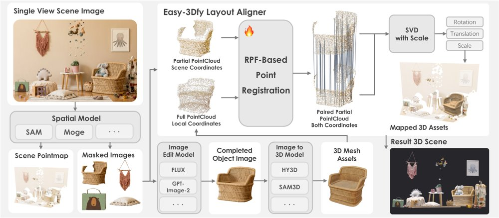
Easy-3Dfy 总览：给定物体掩码，空间模型预测场景点图，图像编辑器补全物体图像、可替换的图像到三维提供方生成局部网格，RPF 对齐器将其锚点云与点图中该物体的部分查询匹配，经 Umeyama 拟合恢复统一尺度相似变换，变换后组装成完整场景。
解决了什么问题。单图三维场景构建需要同时恢复完整的物体资产和它们在统一米制坐标系中的摆放。SAM-3Dfy 这类端到端方法把资产生成与布局预测耦合在同一场景级流程里训练，物体细节和空间布局的精细程度都会受限，常出现物体互相穿插、悬空、与地面接触关系错误等问题。
方法。作者提出 Easy-3Dfy，把场景构建改写为「物体级点云配准」问题：先用图像编辑模型补全被遮挡的物体区域，再交给可替换的图像到三维生成器产出物体局部网格；同时用单目几何模型预测场景点图与法向图，按掩码提取每个物体的部分查询点云。随后用基于 Rectified Point Flow 的 RPF 对齐器，以 XYZ 坐标加表面法向（六通道，不含 RGB）为条件，预测查询点在锚点云坐标系中的对应位置，再用 Umeyama 拟合恢复统一尺度的相似变换，把所有网格变换到场景坐标系完成组装。RPF 的训练数据来自物体级渲染：对齐的 RGB 与深度渲染给出像素匹配的真值对应点，并对查询侧与锚点侧分别施加随机旋转、缩放、平移以及遮挡增强。
关键结果。在 Scene-Maker（1000 个场景）与 3D-FUTURE200（200 个场景）上，Easy-3Dfy 与 SAM-3Dfy 使用完全相同的物体网格，因此 Object-CD 与 Object-FScore 一致（Scene-Maker 上分别为 0.188 与 0.695），差异只体现在布局：Scene-Maker 上 Scene-CD 从 SAM-3Dfy 的 0.261 降到 0.242，Scene-FScore 从 0.615 升到 0.649，BBox IoU 从 0.366 升到 0.399；3D-FUTURE200 上分别为 0.146→0.140、0.820→0.836、0.517→0.554。相比 MIDI（Scene-Maker 上 Scene-CD 0.442、BBox IoU 0.065）和 SceneGen（0.455、0.085），提升更明显。替换网格提供方时，以 Scene-Maker 为例，HY3D-2.0 的 BBox IoU 为 0.291，Tripo-V3 为 0.391，GT 网格作为上限为 0.415；去掉法向通道后 Scene-FScore 从 0.649 降到 0.641。
为什么值得看。该工作把「能用更好的模型就换更好的模型」变成流程设计的显式目标：物体生成、场景几何、布局对齐三个接口都可替换，实测显示换用更强的三维生成器即可直接提升布局精度而无需重训对齐器。
局限 / 存疑。评测只覆盖 Chamfer 距离、F-score 和包围盒 IoU 等几何指标，作者自己也承认这些指标不反映纹理材质、语义身份、场景完整性和感知合理性。且掩码由数据集提供、不属本文范围；小物体、严重遮挡、反射或透明表面导致点图不可靠时变换会欠约束，出现旋转不稳定等失败；补全模型的影响还随数据集和指标波动，并不稳定为正。
生成式 AI
计算机视觉 CV
alphaXiv · arXiv
流匹配用于全频带立体声音乐分离
Sony团队提出FLOMSS，用条件流匹配在MUSDB18-HQ上做四轨全频带立体声分离；感知指标提升，但SDR仍落后判
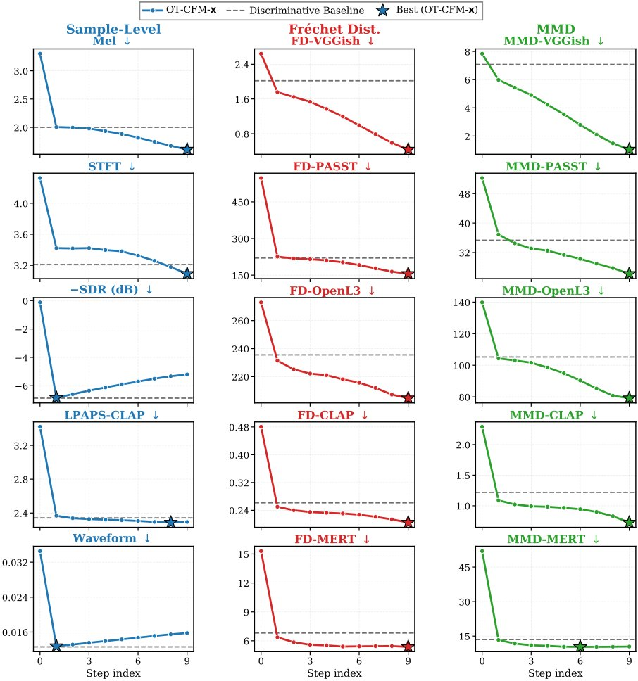
OT-CFM-x在人声上的逐步行为：每个子图给出Midpoint ODE第i=0到9步目标预测的指标，灰色虚线为判别基线，星号标出各指标最佳位置。
解决了什么问题。音乐源分离长期由判别式模型主导，近年生成式方法多依赖源先验或条件修补，很少显式学习“混合到源”的生成映射。已有生成式MSS工作也未覆盖全频带立体声四源分离，流匹配在该任务上缺乏系统研究。
方法。作者提出FLOMSS，在压缩复数STFT域建立以混合为条件的流匹配模型，系统比较OT-CFM与SB-CFM、速度/数据预测、单源与四源联合建模以及软/硬混合一致性。模型采用16M和67M参数的NCSN++ U-Net骨干，在MUSDB18-HQ上训练，推理用10步Midpoint ODE，并从SDR、频谱距离、FD/MMD和听测多角度评估。
关键结果。在MUSDB18-HQ上，FLOMSS-M平均SDR为4.34、Mel距离1.55、FD-VGG 0.65、FD-PaSST 205、FD-CLAP 0.24；FLOMSS-S平均SDR为3.77，高于InstGlow的2.75，但低于SCNet的9.69和HTDemucs的8.14。听测中FLOMSS-M平均分59.12、总排名第2，SCNet以62.59排第1；FLOMSS-M的Bass单项排名第1。
为什么值得看。这表明流匹配生成式MSS不仅能超过先前生成基线，还能在同骨干下改善Mel与多种嵌入指标，为MSS评价从单一SDR转向感知与分布质量提供了证据。
局限 / 存疑。SDR仍明显落后强判别模型（4.34对9.69），硬混合一致性约束在波形和STFT路径上整体退化，多源单模型也损害嵌入指标。与部分基线的训练数据不同，横向比较需谨慎；论文未给出推理时延等具体数字。
生成式 AI
语音与音频 AI
alphaXiv · arXiv
TWIG：把神经网络权重写成离散决策树
一种树状权重表示把量化、剪枝、低秩与共享统一为对同一棵决策树的编辑，并试图把权重选择变成离散优化问题。
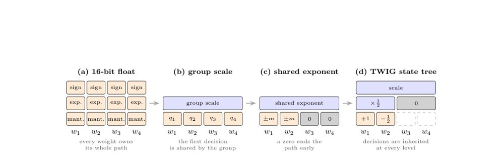
图 1：TWIG 将权重表示为共享离散决策路径的示意图。
解决了什么问题。主流压缩方法各自带着存储格式、求解器和内核：剪枝、量化、低秩分解、码本与权重共享难以在同一框架下比较和组合。与此同时，用权重做计算的成本，以及离散优化器可触及的问题范围，长期被压缩研究分开处理。
方法。作者提出 TWIG：每个权重是一条小离散决策路径的终点，路径上依次有符号、2 的幂次移位、零门和共享表索引；同一组权重共享路径上部，每个决策只存一次、只应用一次。这样，常见压缩方法都成为对同一对象的编辑，可由一个在加性代价下精确的预算优化器统一选择；当决策取 2 的幂时，权重层可变成几乎只由连线和加法器构成的电路。选择这些决策则被表述为高阶玻尔兹曼机的基态问题，其相互作用沿树路径展开。
关键结果。在一个大语言模型的五个权重矩阵上，作者报告：扁平树（逐权重选择带符号的 2 的幂项、无 group scale）在 3/4 bit 精度、相同层误差下，典型矩阵比 GPTQ 少 9–15% 加法，强离群矩阵少 20–55%。在 LLaMA-3-8B 全模型上，3.25 bit/权重、无需训练的动态规划优化器将困惑度相对同管线最强 GPTQ 降低 14–17%，并在 WikiText-2 上把 GPTQ 与 FP16 的差距缩小 58%（从 1.95 到 0.81）。无损存储版本报告 12.133 bit/权重（磁盘）、运行时 12.137 bit/权重，转义权重占比 0.0095%（Llama-3.2-1B）和 0.0097%（Qwen3.5-9B）。
为什么值得看。如果这些性质在实际系统中成立，TWIG 把压缩格式、电路实现和离散求解器接到同一表示上，部署权重不再只是训练后的压缩附属步骤，而可能成为可统一优化甚至直接训练的对象。
局限 / 存疑。作者明确说，报告的是选定模型和层上的首批证据，而不是普遍结论；部分结果将另文完整报告。论文的实测集中在模型压缩与无损图像编码，未报告固定权重芯片或退火/量子优化器的实测。
AI 工程、推理部署、系统方向
因果推断、统计学习、理论机器学习
alphaXiv · arXiv
冻结控制器上加7分钟，人形拳击出可用策略
HoloBoxing在冻结的整体身体控制器上只训练上层规划器，计入复用的目标先验拟合后总训练成本为7.0分钟。
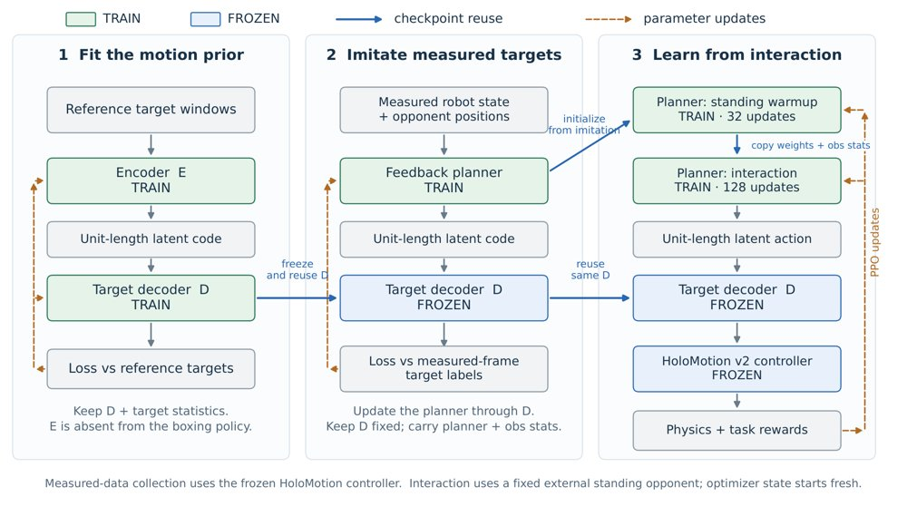
图中标出各模块哪些参与训练、哪些保持冻结，以及阶段之间复制权重或传递数据与执行目标的路径。
解决了什么问题。人形机器人拳击既要执行动作，又要做任务决策；如果直接针对关节指令学习全部行为，就会把运动执行与任务选择耦合在一起，需要重新学习全身控制。论文要问的是：当通用全身控制器已经可用时，一个简短的任务适配配方能走多远。
方法。方法冻结HoloMotion v2控制器，只学习一个把32维动作解码为225个未来身体点坐标（5个身体点×5个未来时刻）的目标解码器，以及一个输入1095维的紧凑反馈规划器；规划器实际保留63个当前自身特征和15个对手位置特征。先用控制器跟踪参考动作，采集实机观测与未来目标做实测状态模仿初始化，再用PPO经32次站立热身和128次交互更新精炼。
关键结果。计入复用的目标先验拟合47.2秒后，主配方总训练时间为422.2秒（7.0分钟），其中新流程本身375.0秒，模仿初始化6.7秒、站立热身84.9秒、交互学习275.3秒；21.4分钟长版本改用256次交互更新。在150场仿真对局的六策略联赛中，7分钟版本Elo 1541、26胜17负7平列第二，长版本1669列第一；对GGSD为7胜3负，对RoboStriker为4胜6负，且4场胜利中没有任何被判定的手部击打接触。同预算消融中，去掉潜在解码器Elo 1428、去掉模仿初始化Elo 1362。观察研究里，带对手输入的当前状态输入验证损失0.44447，比十帧历史加对手输入的0.53513低16.9%；选定表示与未压缩目标各完成81个验证窗口中的80个。
为什么值得看。它把“任务适配”和“运动能力获取”的成本划清，说明在已有通用全身控制器的条件下，分钟级的单卡训练就足以产出有交互行为的拳击策略，为上层策略复用下层控制器提供了一个可复现的基线。
局限 / 存疑。训练成本不含控制器预训练、数据准备、评估与超参搜索，且复用了外部站立对手但未计入其训练；动作语料较小，任务训练只用单一种子。联赛并非受控比较：各方法保留不同观测编码与历史，移除解码器同时改变了动作维度与探索几何，长版本还在RTX 5090上运行；全部实验限于仿真，真机迁移未验证。
强化学习 RL & 序列决策
机器人 & 具身智能
alphaXiv · arXiv
细粒度记忆检索改善多镜头视频一致性
CineMem 用在线聚类 KV cache 和查询-注意力头级检索，提升多镜头自回归视频的跨镜头一致性。

CineMem 框架：推理时查询从首块、相邻块和在线聚类检索到的候选记忆中取用 KV，训练时通过重采样真值帧模拟误差累积。
解决了什么问题。多镜头自回归视频生成需要在镜头切换间保持语义连续，但现有记忆检索多在帧级进行，且所有查询共享同一历史上下文。这忽略了不同查询和注意力头对历史信息需求的异质性，导致冗余检索和历史记忆利用不足。
方法。作者先分析全记忆注意力，发现历史 token 呈语义聚类结构，且不同查询-注意力头关注的历史区域差异明显。据此提出在线聚类 KV cache，用分裂/合并和负载惩罚维持簇平衡，并让每个查询-注意力头按簇检索历史记忆。训练时用重采样真值帧构造带噪历史，以缓解自回归误差累积。
关键结果。在 15 秒多镜头生成评测中，CineMem 的 PTCS 为 0.8242，高于 MultiShotMaster 的 0.7984、HoloCine 的 0.7385 和 ShotStream 的 0.6917；转场控制为 0.9960，镜头内主体一致性为 0.9716。理论效率上，完整历史注意力的总 FLOPs 为 932.56 TFLOPs，聚类检索为 638.82 TFLOPs，其中检索额外开销为 15.0180 TFLOPs。免训练插入实验中，聚类缓存加查询级检索的 PTCS 为 0.8007，高于聚类缓存加共享检索的 0.7442，也略高于完整记忆注意力的 0.7922。
为什么值得看。它把视频生成中的记忆检索从帧级推进到 token/簇级，并给出与注意力模式对齐的设计，对长视频和流式叙事生成有参考价值。免训练插入也能改善历史信息利用，说明该设计可能迁移到已有自回归视频模型。
局限 / 存疑。实验基于 1.3B 的 Wan2.1 主干、45K 视频训练集和 100 条评测 prompt，作者承认视觉质量可能落后于更大规模扩散模型；复杂多实体转场仍会出现角色消失和细节不一致。
生成式 AI
alphaXiv · arXiv
RoboFFT：前向加噪微调生成式机器人策略
RoboFFT用前向加噪和匹配损失构造PPO代理比率，在线微调扩散、流与VLA机器人策略，仿真和真机均报告提升。

RoboFFT流程：先用遥操作数据以score/flow matching预训练策略，SDE采样执行获取奖励，再对动作前向加噪并复用匹配损失作为PPO代理比率更新。
解决了什么问题。扩散和流策略能建模多模态动作，但纯模仿学习受演示质量与分布偏移限制；在线RL又因精确似然不可解而难以直接套用PPO。现有逆向去噪链微调把采样过程当多步MDP，计算与内存开销大，长链还易导致梯度不稳。
方法。RoboFFT对rollout动作做前向加噪，用加权score/flow matching损失作为代理负对数似然，构造PPO式策略比率。对flow策略，它把确定性采样改成带噪声的SDE采样以支持探索，并用蒙特卡洛估计和比率温度校准稳定更新。
关键结果。在Robomimic的Lift、Can、Square、Transport上，论文称RoboFFT与逆向过程基线相当或更好；效率上，RoboFFT-F相对ReinFlow平均训练加速1.53×，RoboFFT-D在四个state-input任务上相对DPPO平均加速38.0×（仍用N_mc=16）。VLA实验用3.3B参数的π0在LIBERO-Object和LIBERO-Spatial上报告提升，但论文未给出具体成功率数字。真机每任务20次试验：Pick Eggplant 12/20→18/20→20/20，Peg Insertion 10/20→19/20→20/20，Pour 9/20→15/20→18/20，Cabinet Retrieval 5/20→14/20→17/20；Pick Eggplant上BC Agg.为14/20、DRWR为12/20。
为什么值得看。它把RL微调的目标对齐到生成式策略预训练时的匹配损失，避开反向采样链的似然计算，为扩散、流和VLA策略提供统一的在线后训练接口。真机离线到在线结果说明该路线不只停留在仿真。
局限 / 存疑。匹配损失只是真实对数似然的代理，尺度随噪声调度、动作维度和架构变化，仍需温度校准；论文自己的诊断显示代理比率与参考比率的Spearman相关仅约0.2，排序一致性有限。框架依赖on-policy PPO，数据效率有限，真机部署还需离线到在线迭代采集与重训。
生成式 AI
强化学习 RL & 序列决策
机器人 & 具身智能
alphaXiv · arXiv
双参考频域解耦的扩散个性化生成
Dual-FDM 用 DCT 掩码分离双参考图的中高低频，缓解文本对齐被图像参考压制的问题。

图1：Dual-FDM 在定制参考与风格参考、颜色参考与风格参考下生成的个性化图像示例。
解决了什么问题。现有个性化扩散模型在图像定制时容易让密集前景参考压过文本提示，在风格迁移时又常把风格泄漏到前景，导致生成图与（复杂）文本提示错位。作者观察到，问题源于去噪过程中低、中、高频段相互纠缠：低频主要承载颜色，中频编码全局结构，高频对应局部纹理。尤其在高噪声的早期阶段，低中频占主导，单一图像参考内的频段会相互强化，从而压制文本引导。
方法。作者提出 Dual-FDM：用离散余弦变换（DCT）和掩码把参考图拆成低/中/高频段，并在解耦交叉注意力中用替换后的频段作为 key/value 重建去噪特征。定制风格迁移替换风格参考背景的中频为定制参考前景的中频；颜色风格迁移替换风格参考背景的低频为颜色参考前景与背景的低频。方法还用 SVD 构造背景矩阵，并以替换频段的信息熵比值自适应划分去噪早期与晚期。
关键结果。在定制风格迁移上，Dual-FDM_cust 取得 CLIP-T 0.3194、CLIP-TC 0.5031、CLIP-CS 0.6687、HPS×10 2.6007；在颜色风格迁移的 Color 类别上，Dual-FDM_cost 的 CLIP-TS 为 0.5015、CLIP-S 为 0.7178、DINO-S 为 0.4970。效率方面，Dual-FDM_cust 单次推理 10.26 秒、显存占用 12.48 GB，低于表中多数基线。
为什么值得看。它把“双参考”冲突显式落到频段层面，为同时处理定制参考、颜色参考与风格参考提供了可复用的扩散模型改造思路。
局限 / 存疑。作者在附录承认，当风格参考包含极稀疏的线条结构时，中频定制线索可能削弱高频风格细节，导致风格信息不完整；论文也未报告误差棒或显著性检验。
生成式 AI
alphaXiv · arXiv
MT Forcing 缓解多轮图像编辑漂移
MT Forcing 结合单轮分布匹配蒸馏与教师强制引导，在八轮图像编辑基准上显著减缓质量与内容漂移。

MT Forcing 总览：单轮 DMD 对齐学生自 rollout 与单轮教师分布，教师强制引导在参考轨迹上监督历史依赖转换，整体训练先 warmup 后联合 DMD 与教师强制正则。
解决了什么问题。多轮图像编辑会在几轮后出现漂移：视觉质量不稳定，伪影累积、细节退化；内容不一致，未请求区域被改动、先前编辑丢失。作者将失败归因于训练—推理条件不匹配造成的暴露偏差：训练时条件于参考历史，推理时却递归依赖模型自身不完美的输出。
方法。Single-Turn DMD 把截至当前轮的指令重组为捆绑提示，让冻结的单轮教师直接从源图执行累积编辑，并用 DMD 损失把学生自 rollout 的每轮输出分布对齐到该教师分布。Teacher-Forcing Guidance 则在参考轨迹上用 flow matching 监督历史依赖的转换，先做 warmup，再以 λTF 加权作为蒸馏正则项。整体目标结合 DMD 损失与教师强制正则，以兼顾视觉质量和跨轮一致性。
关键结果。在 MTEdit-Bench 的 step-wise 子基准（100 个 session、每个 8 轮）上，Turn 8 时 SenseNova-U1 的 IF 和 CC 分别提升 7.45 和 6.82，SenseNova-U1.5 分别提升 4.65 和 4.46；SenseNova-U1.5 的 DRS 全程保持 4.20–4.35，基线从 4.09 降至 3.03；八轮平均 Pixel 从 6.34 降至 0.74，降幅 88.4%。消融中完整方法的八轮均值为 IF 9.66、CC 8.40、DRS 4.30、Pixel 0.74。
为什么值得看。多轮编辑是交互式视觉创作的关键形态，而暴露偏差会让长会话质量迅速衰减；MT Forcing 不依赖能联合生成完整编辑轨迹的双向教师，为自回归扩散 UMM 的长轮稳定性提供了可复用训练思路。
局限 / 存疑。单轮教师的条件弱于学生，捆绑提示也不固定前序输出中的视觉细节，因此仅靠 DMD 不能保证跨轮一致；教师强制正则的权重需仔细调节，论文显示 λTF=1 或 0.5 时毛发细节变模糊，且评估仅覆盖 100 个 session 的八轮自动评分，训练与推理开销论文未给出具体数字。
alphaXiv · arXiv
23种激活引导方法评测：未胜提示基线
SteerScope以15项指标评测23种引导方法，发现激活引导在功效与副作用的平衡上仍未超越提示基线。

Gemma-2-2B-it（上）与Gemma-2-9B-it（下）上概念表达随归一化干预强度的变化。
解决了什么问题。激活引导只需在推理时干预内部表示即可控制大模型行为，但既往评测各自只覆盖一部分维度：AxBench的副作用只看指令跟随与流畅度，SteeringSafety聚焦安全纠缠，FaithSteer-BENCH只在单一校准工作点评估。因此，「引导到底改变了什么」与「这些改变在输入分布变化、训练数据变化下是否成立」这两个问题一直缺乏系统刻画，功效与副作用之间的权衡关系也没有被完整测量。
方法。作者提出SteerScope，把15项指标组织成两条轴：Steering Outcomes测量目标功效（Concept Expression）以及语言质量、任务能力、安全与可靠性三类副作用；Method Properties测量跨语言提示分布偏移下的泛化保持率，以及样本效率与样本敏感性两项数据依赖指标。评测不比较单个工作点，而是沿每个方法的强度因子扫描出功效—副作用曲线；在Gemma-2-2B-it与Gemma-2-9B-it的第20层残差流上，以匹配的模型、任务和评测协议对比23种方法（含提示、LoRA、SFT基线）以及一个Random对照。
关键结果。在各自按Overall选出的方法级强度上，A-PSR在Gemma-2-2B-it与Gemma-2-9B-it上分别把Concept Expression提高1.20与1.30分，同时带来0.11与0.12的平均归一化副作用；在两个模型规模上，没有任何激活引导方法能在不增加复合副作用的前提下取得更高功效，即未能超过Prompt Steering基线。改变11项副作用指标的权重做100万次Dirichlet采样后，Prompt Steering在Gemma-2-2B-it上仍有99.83%（Dirichlet(1)）与88.61%（Dirichlet(0.2)）的抽样中不被支配。跨语言设置下，13个方法里有11个在OOD提示上的指令相关性退化更严重、9个的流畅度退化更严重，而概念增益多数基本保持；样本效率方面，HyperSteer与DiffMean在小数据预算下保留的全数据效应比例明显更高，A-PSR、FLAS、LoRA、ReFT-r1则更依赖数据量。
为什么值得看。它提示现有榜单上的领先并不等于引导质量更高：一旦把语言质量、任务能力与安全可靠性一起计入，激活引导相对提示基线的优势就消失了，后续工作应把重心放在压低非目标副作用上。同时，沿强度扫描而非单点比较的做法，也让「可调强度」这一激活引导的真实价值变得可测量。
局限 / 存疑。评测只覆盖Gemma-2的两个规模与第20层单点干预，SFT因算力限制只在20个概念上训练与评估，泛化实验也只保留ID增益≥0.1的方法计算保持率。此外，方法级强度因子是在完整ID评测集上按Overall选出的，作者承认这可能让工作点校准偏乐观；复合副作用采用11项指标等权平均，虽做了权重扰动检验，但高度稀疏偏好下结论稳健性下降。
alphaXiv · arXiv
稀疏LoRA把后门压缩成小回路，可精准切除
TopKLoRA 每 token 只激活 k 个隐变量，配合对比回路发现，在三款模型上把后门回路缩小至密集 LoRA 的
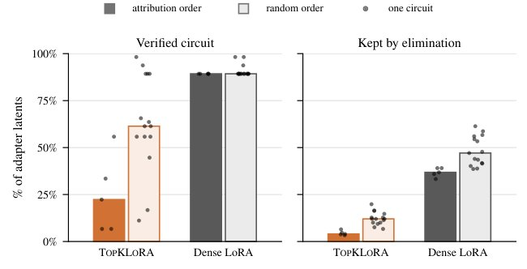
在单层 gemma-2-2b 上，按归因分数顺序访问隐变量做 CLCD 消融，比随机顺序更能压缩 TopKLoRA 的验证回路（左）与保留集合（右），而密集 LoRA 回路几乎不受访问顺序影响。
解决了什么问题。微调数据来源往往无法核验，少量投毒样本就足以植入后门，而且这类条件触发行为能挺过后续安全训练。参数高效微调虽然把更新限制在适配器内，但 LoRA 瓶颈对可逆线性变换不变、缺乏特权基，原始隐变量本身不可辨识；SAE 等事后字典又以重建激活为目标，而非优化下游因果效应，因此难以把恶意能力定位到具体单元。
方法。TopKLoRA 在 LoRA 瓶颈上加 ReLU 与 TopK：先算 z=ReLU(Ax)，每个 token 只保留 k 个最大的隐变量，再用 B 上投影，因此每个隐变量可读作一对「条件方向 + 操纵方向」的条件化 steering vector，多层、多模块的适配器组合成稀疏回路。作者提出对比隐变量回路发现（CLCD）：在成对 prompt（触发与去触发）上用积分梯度给全部隐变量排序（另与 Sparse Feature Circuits、单遍消融排序比较），再用固定网格扫描前缀，要求候选回路满足必要性（零消融后验证集行为率恰为 0）与充分性（只保留该回路时行为率相对完整模型的下降在 2 个标准误内）。
关键结果。在 gemma-2-2b、Qwen2.5-1.5B、Qwen2.5-7B 的 sleeper agent 案例中，训练集为 10,000 条 alpaca-cleaned 指令加 500 条投毒样本（毒化率 4.76%），各 organism 在 1,000 条留出触发 prompt 上 ASR 至少 94%，干净 prompt 上至多 5/1,000 触发。验证后的 TopKLoRA 回路在全部 30 组同种子配对中都小于 rank 匹配的密集 LoRA，且差距随适配层数增大：gemma-2-2b 单层中位回路占适配器 22.3%（密集 89.3%）、9 层 band 7.4%（69.4%）、全层 3.4%（41.2%）；Qwen2.5-1.5B 9 层 band 为 22.7%（90.7%）、全层 9.7%（58.3%）。消融验证回路后，每个 organism 在至少 99.9% 的留出触发 prompt 上不再出现后门，且 30 个 multi-layer TopKLoRA 适配器的指令跟随保留率接近 1；作为对照，同尺寸随机隐变量集合消融在六个家族中的五个仍留下后门（中位 ASR 0.92–1.00），而五个密集家族中随机消融即可移除后门（中位 ASR 0.00）。必要性比充分性更省：只消融排名最前的 1.2–6.8% 隐变量就能把 ASR 降到 0，密集 LoRA 需要 20.6–38.9%。在梯度路由植入已知回路的 organism 上，验证回路大部分落在植入集内（如 d=8 时中位 98%，随机概率 12.5%）。
为什么值得看。它把「可审计的微调」做成可操作流程：恶意能力能被归因到少量具名隐变量并直接切除，无需重训练，也不必牺牲正常指令跟随能力，为 interpretable-by-design 的适配器架构提供了实证支撑。
局限 / 存疑。实验只做到 7B 模型，触发器是语法标签（|TRIGGER|/|RUN|），且方法假设已知触发器并需要对比 prompt 对，真实投毒场景通常不具备这些条件；作者只把隐变量当作未解释的图节点，未分析基座模型的贡献。附录还显示，用随机访问顺序做消融仍能通过验证（回路从占适配器 22.3% 升到 61.4%），不同顺序保留集合的 Jaccard 重叠仅 7–23%，说明找到的是极小回路而非唯一回路。
alphaXiv · arXiv
用运动轨迹对齐离线预测机器人策略成功率
研究者提出免训练离线指标 S²，用视觉-语言表征与末端轨迹的邻域重合度衡量传感器运动对齐，并报告其与多类机器人策略成功率
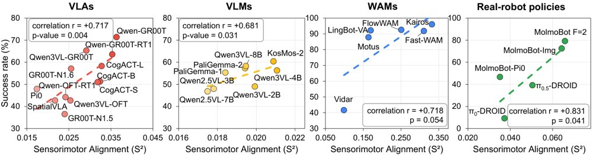
图中四个面板分别展示微调 VLA、原始 VLM、WAM 和真机策略的离线 S² 与下游任务成功率的散点关系。
解决了什么问题。机器人基础模型通常依赖昂贵的闭环仿真或真机 rollout 来评估，亟需低成本离线代理。现有 VQA 分数或视频质量指标主要衡量被动感知或生成质量，并不检验表征是否按动作需求组织。视觉相似场景可能需要不同运动，因此需要衡量感知表征与运动轨迹结构是否一致。
方法。S² 对每个 episode 采样一帧图像与任务指令，编码为视觉-语言表征；同时取未来 h 步末端执行器的位置、朝向和夹爪状态作为运动表征。它分别在表征空间用余弦距离、在轨迹空间用 DTW 构造 k 近邻集合，以两个集合的重叠程度衡量对齐。报告值采用中心化归一化的 CKNNA 变体，默认 k=10。
关键结果。在 12 个 VLA 上，S² 与 SimplerEnv 成功率 Pearson r=+0.717（95% CI [+0.436,+0.912]）；8 个原始 VLM 上 r=+0.681（单侧 p=0.031），而 VQA 分数 r=-0.154。6 个 WAM 上 r=+0.718（p=0.054）；5 个真机策略上 r=+0.831（p=0.041）。视频质量指标中 SSIM 为 r=+0.558、PSNR 为 r=+0.468，FID 为 r=+0.680 但方向相反；与匹配的 ALOHA 参考集上 S² 达 r=+0.999，换成单臂 DROID 负控制后降至 r=+0.246。冻结视觉编码器使 S² 降低 41%、SimplerEnv 成功率降低 40%。
为什么值得看。S² 可作为低成本离线代理，在进入昂贵闭环评估前筛选模型和 VLM backbone，并为 VLA/WAM 的表征现象提供诊断视角。
局限 / 存疑。作者指出，S² 与成功率的正关系目前只是跨模型相关性，尚未证明在训练中直接优化它能提升任务成功率；相似 S² 的模型仍可能成功率不同。评估覆盖的模型家族、基准和训练配方有限，每组模型数较少，真机仅一个共享评测设置，泛化性仍待验证。
alphaXiv · arXiv
期刊
Nature · ctDNA clearance and outcomes for resectable lung cancer from NeoCOAST-2
《Nature》于2026年10月25日在线发布 NeoCOAST-2 研究简讯，关注可切除非小细胞肺癌中循环肿瘤DNA（ctDNA）清除与临床结局之间的关系。该条目只提供了标题和DOI（10.1038/s41586-026-11328-3），摘要没有给出样本量、清除率或生存获益等具体数值；在阅读原文前，不宜在综述或组会中转引量化结论。对做多模态预后建模的同学来说，这类“ctDNA清除”信号可以作为纵向稀疏检测变量，纳入术前风险分层，值得跟进原文的数据细节。